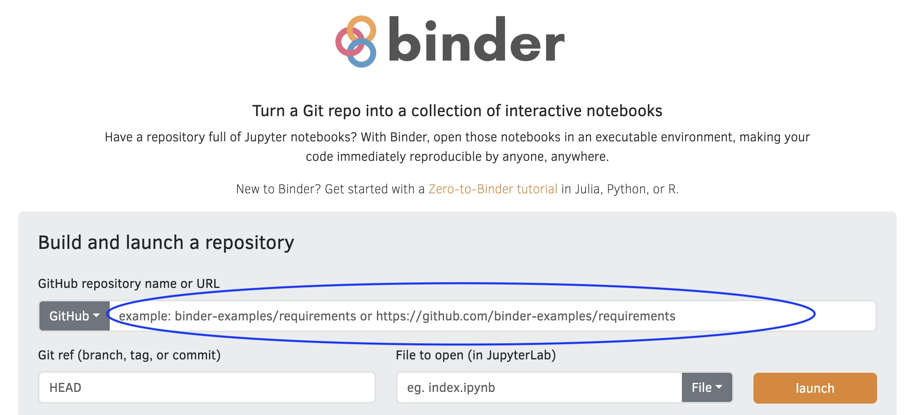

graph LR A[Lockfile] --> B B[Binder Ready] --> C C[Dockerfile]
This workshop adheres to the DaSL Learning Community Participation Guidelines:
Please be respectful of your fellow learners and help each other learn.
Remember, it’s dangerous to learn alone! So partner up with someone, it’s fun to learn together.
Introduce yourself live or in chat:
uv/rv require you to be proactive (start from scratch)renv::snapshot()/requirements.txt as good starting pointsuv (Python)rv (R)In order of complexity:
graph LR A[Lockfile] --> B B[Binder Ready] --> C C[Dockerfile]
Tradeoff in terms of work on your side / ease on their side
uv/rv)renv and rvvenv and uvuv/rv: State of the art package managementrv - package manager for Ruv - package manager for Pythonmy_project/ ## Top level
├── rv.lock ## R
├── rproject.toml
├── uv.lock ## Python
├── pyproject.toml{
"R": {
"Version": "4.2.3",
"Repositories": [
{
"Name": "CRAN",
"URL": "https://cloud.r-project.org"
}
]
},
"Packages": {
"markdown": {
"Package": "markdown",
"Version": "1.0",
"Source": "Repository",
"Repository": "CRAN",
"Hash": "4584a57f565dd7987d59dda3a02cfb41"
},
"mime": {
"Package": "mime",
"Version": "0.7",
"Source": "Repository",
"Repository": "CRAN",
"Hash": "908d95ccbfd1dd274073ef07a7c93934"
}
}
}version = 1
revision = 1
requires-python = ">=3.13.2"
resolution-markers = [
"python_full_version >= '3.14' and sys_platform == 'win32'",
"python_full_version >= '3.14' and sys_platform == 'emscripten'",
"python_full_version >= '3.14' and sys_platform != 'emscripten' and sys_platform != 'win32'",
"python_full_version < '3.14' and sys_platform == 'win32'",
"python_full_version < '3.14' and sys_platform == 'emscripten'",
"python_full_version < '3.14' and sys_platform != 'emscripten' and sys_platform != 'win32'",
]
[[package]]
name = "branca"
version = "0.8.2"
source = { registry = "https://pypi.org/simple" }
dependencies = [
{ name = "jinja2" },
]
sdist = { url = "https://files.pythonhosted.org/packages/32/14/9d409124bda3f4ab7af3802aba07181d1fd56aa96cc4b999faea6a27a0d2/branca-0.8.2.tar.gz", hash = "sha256:e5040f4c286e973658c27de9225c1a5a7356dd0702a7c8d84c0f0dfbde388fe7", size = 27890 }
wheels = [
{ url = "https://files.pythonhosted.org/packages/7e/50/fc9680058e63161f2f63165b84c957a0df1415431104c408e8104a3a18ef/branca-0.8.2-py3-none-any.whl", hash = "sha256:2ebaef3983e3312733c1ae2b793b0a8ba3e1c4edeb7598e10328505280cf2f7c", size = 26193 },
]Anaconda is charging institutions for using their forge - be aware that you will need to pay charges or change your forge to the Fred Hutch version.
For more info: https://conda-forge.fredhutch.org/
rproject.toml and rv.lock filepyproject.toml and uv.lock filerproject.toml / pyproject.tomlrv.lock and uv.lockrv.lock / uv.lockrv and uvuv sync and rv sync in your project folderrig: https://github.com/r-lib/rig/rv/uvrequirements.txt/renv.lock file and migrateuv and rv: start from scratchuv and rv expect you to start from scratchuv init/rv init.rv/.uv directoryuv add/rv adduv add pandasrv add tidyverseuv / rv will solve the dependency tree and updaterproject.toml or pyproject.toml and the lock filesrv initrv add dplyrgit add . and git commit everythingA special way to share your analysis
mybinder.org
requirements.txt (Python), environment.yml (Conda) or install.R (R) or Dockerfiles in your repositoryinstall.R using renv (put in your top directory)FROM rocker/geospatial:4.5.0
LABEL org.opencontainers.image.licenses="GPL-2.0-or-later" \
org.opencontainers.image.source="https://github.com/achubaty/rocker-files" \
org.opencontainers.image.vendor="FOR-CAST Research & Analytics" \
org.opencontainers.image.authors="achubaty@for-cast.ca"
COPY scripts/* /rocker-files_scripts/
RUN /rocker-files_scripts/install_additional_libs.sh
RUN /rocker-files_scripts/install_geospatial_extras.sh
RUN /rocker-files_scripts/install_geospatial_R.shhttps://github.com/achubaty/rocker-files/blob/main/dockerfiles/r-spatial-base_4.5.Dockerfile
https://github.com/getwilds/wilds-docker-library/blob/main/bcftools/Dockerfile_latest
uv/rv require you to be proactive (start from scratch)renv::snapshot()/requirements.txt as good starting pointsFor R:
rvrig to manage different versions of R
rig add 4.5.2 to add R 4.5.2 on your systemuv